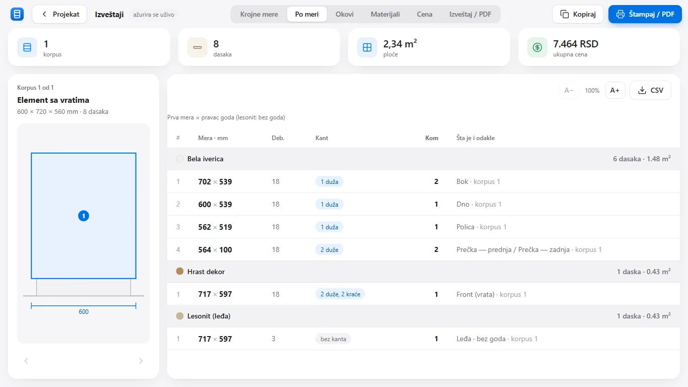

What a cut list is and how to read it
A cut list is the sheet of paper (or the table) that goes from the workshop to the panel saw. It holds every panel of one piece of furniture: how long, how wide, how thick, which material, where the edging goes and how many pieces are needed. Whoever cuts the boards doesn't need to know what the piece looks like; the list is enough. That makes the cut list the most important document between the design and the finished furniture: if it is right, everything fits; if 18 mm are missing on paper, they are missing in the kitchen too.
What a cut list contains
For panel furniture (kitchens, wardrobes, cabinets made of chipboard) one line of the list usually carries six facts:
- Panel name and which cabinet it belongs to: side, bottom, shelf, rail, front, back.
- Length × width in millimetres, the net size of the finished panel.
- Thickness: 18 mm for carcass and fronts, 3 mm hardboard for backs, 8–10 mm for drawer bottoms.
- Material: white chipboard, oak decor, coloured hardboard.
- Edging: which edges get edge banding and which tape (0.45 mm for the carcass, 1 or 2 mm for fronts).
- Quantity: two sides, one bottom, two rails.
A good list is grouped by material and thickness, because that is how boards are cut: all white 18 mm chipboard first, then fronts, then hardboard.
The first dimension is the grain direction
With patterned decors (oak, walnut, sonoma) it matters how the panel sits on the sheet. Cut lists therefore follow one convention: the first dimension always runs along the grain. A 717 × 597 front has its grain running vertically, as a door should. Written as 597 × 717, the grain would run horizontally. For white chipboard and hardboard this doesn't matter, so the program marks the back as “no grain”.
Example: a 600 × 720 × 560 base cabinet
An ordinary base cabinet with one door and one shelf has eight panels. The bottom sits over the sides (full width 600), so the sides are 702 high, not 720. The carcass depth is 539, because the front (18) and the back (3) are taken off the 560.
| Panel | Size (mm) | Thk. | Edging | Qty |
|---|---|---|---|---|
| Side | 702 × 539 | 18 | 1 long | 2 |
| Bottom | 600 × 539 | 18 | 1 long | 1 |
| Shelf | 562 × 519 | 18 | 1 long | 1 |
| Rail | 564 × 100 | 18 | 2 long | 2 |
| Front (door) | 717 × 597 | 18 | 2 long, 2 short | 1 |
| Back (hardboard) | 717 × 597 | 3 | none | 1 |
Somebody has to work out every one of these numbers. For one cabinet that is ten minutes with a pencil. For a twelve-unit kitchen it is an hour and at least one mistake.
How TOPICA builds the cut list
In the program you don't write the cut list: it is calculated from the cabinets you placed in the room. Change a unit from 600 to 450 wide and all eight panels get new sizes that instant, together with edging, hardware and price. The “By size” view puts identical sizes on one line, grouped by material, with the edging mark and the quantity, exactly as it goes to the saw. That view is copied with one click and sent as a message or printed to PDF.

The program keeps the “first dimension = grain direction” rule by itself: a front is always written upright, and hardboard carries the “no grain” mark. If you later change the back thickness or the front edging in the workshop settings, the change flows through every panel in the project, including the ones you already looked at.
Which tape goes where is covered in the guide Edge banding: which thickness goes where, and the hole pattern in System 32.
A cut list is not complicated. What is complicated is getting it right every time, for every unit, after the customer has changed their mind three times. That is what the program is for.
Try this on your own project.
Download the free trial